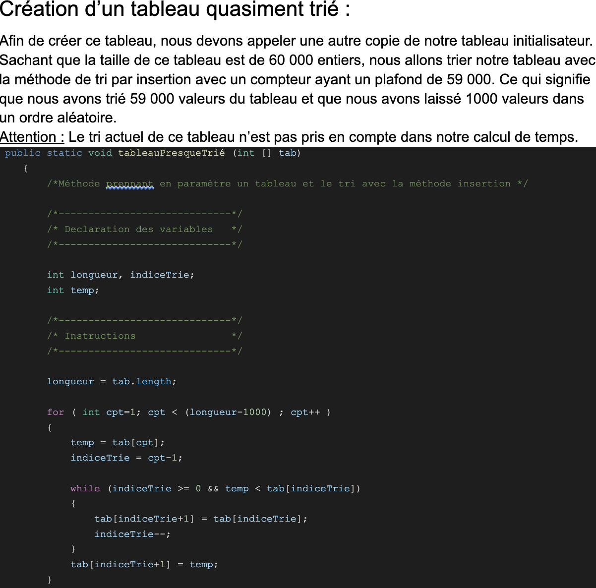
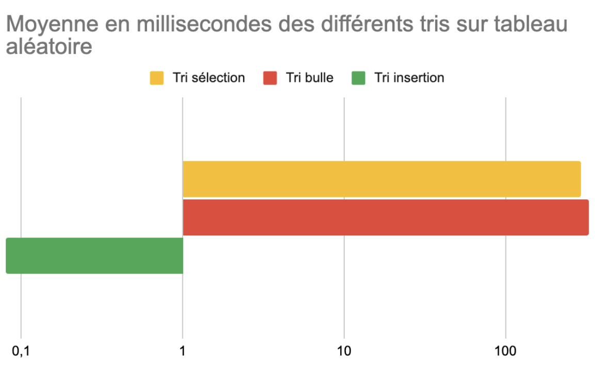
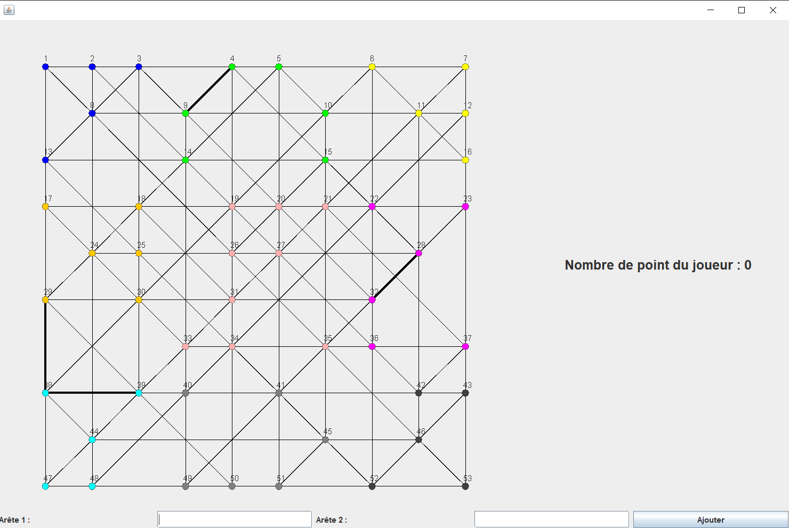

Tris
Au cours de notre projet, nous avons développé un programme efficace permettant de comparer les performances des différents types de tris, tels que les tris par insertion, à bulles et par sélection.
Pour ce faire, nous avons créé trois tableaux distincts : un tableau avec des éléments disposés aléatoirement, un autre avec des éléments inversés et enfin un dernier avec des éléments triés de manière ascendante.
Dans notre code, nous avons intégré un chronomètre afin de mesurer le temps d'exécution de chaque algorithme de tri sur ces tableaux. Cette approche nous a permis d'évaluer objectivement la rapidité et l'efficacité de chaque type de tri dans différentes configurations, nous aidant ainsi à identifier la meilleure approche en fonction des besoins spécifiques du projet.


Graphe
Dans le cadre de notre projet, nous avons développé un jeu original basé sur un graphe, dont le principe est de récolter un maximum de points en coloriant des arêtes.
Pour créer ce graphe, nous avons utilisé un fichier texte contenant les informations nécessaires. Grâce à un décomposeur fourni par l'IUT, nous avons pu lire et analyser le contenu du fichier de manière efficace.
Cette approche nous a permis de générer le graphe de manière dynamique, en définissant les arêtes et leurs propriétés en fonction des données extraites du fichier texte.
Ainsi, nous avons pu offrir aux joueurs une expérience immersive et stratégique, où ils peuvent explorer le graphe, prendre des décisions tactiques et optimiser leurs points en coloriant les arêtes judicieusement.
